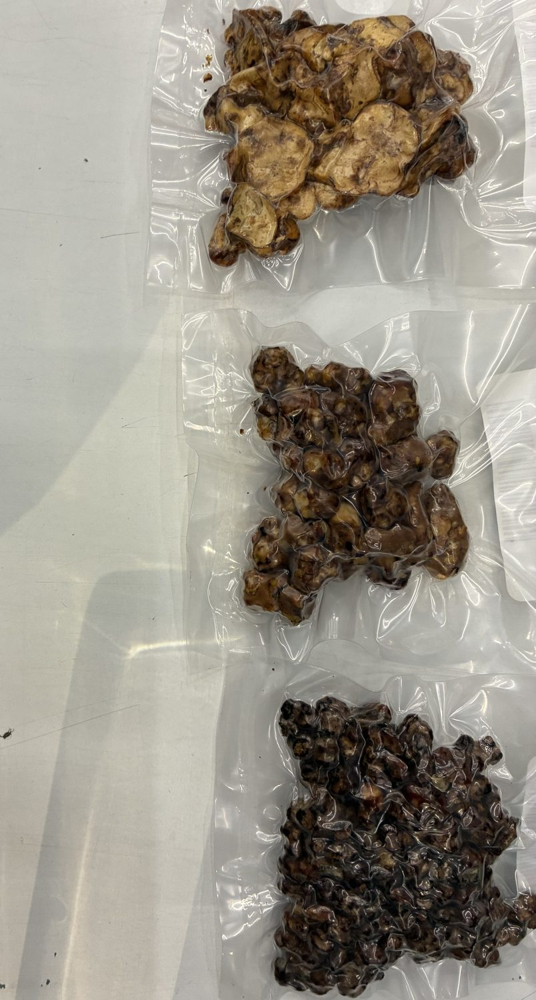
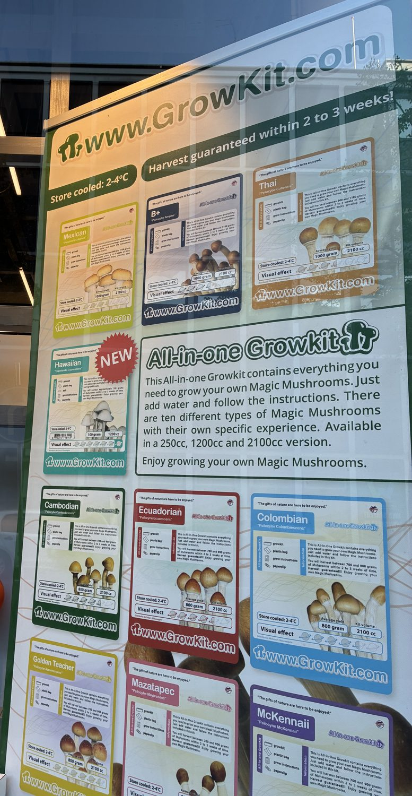
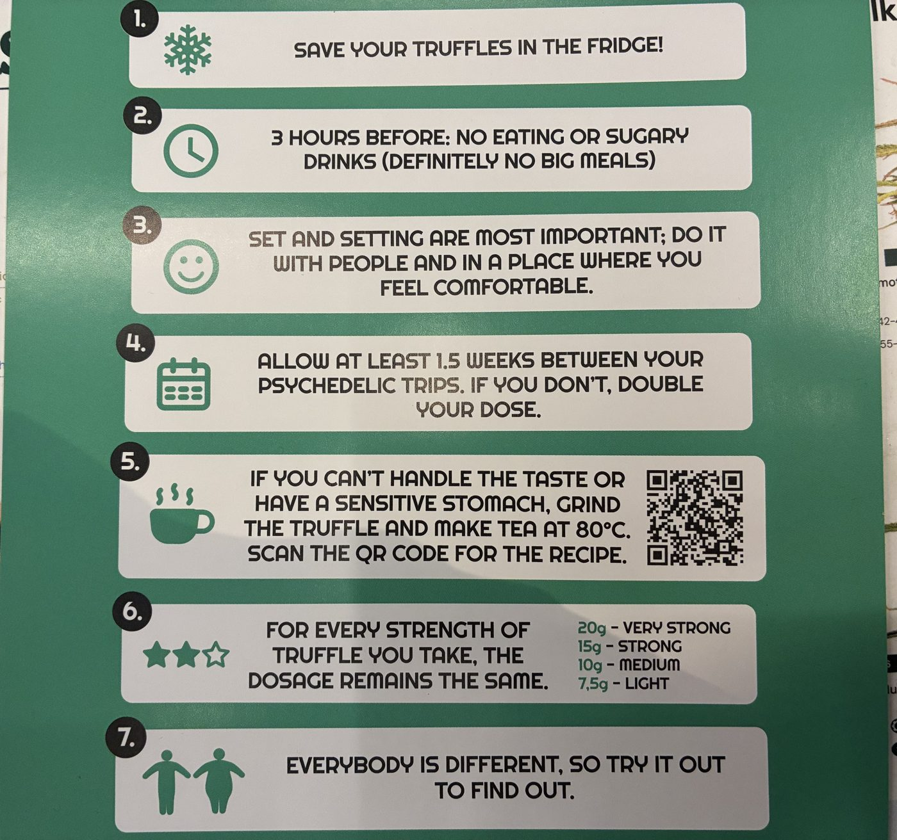

Deze website helpt je oriënteren op wat psilocybine, de werkzame stof in paddo's en truffels, precies is, waarvoor mensen het gebruiken en hoe het werkt. Daarnaast hebben we twee interessante interviews mogen afnemen, met een expert en met een smartshopmedewerker. Deze website raadt het gebruik van psilocybine niet aan en ook niet af, maar biedt een oriëntatiemogelijkheid over psilocybine en de voor- en nadelen.
Dit is geen medisch advies. Gebruik je medicijnen, heb je een psychische klacht of een hartaandoening, bespreek het dan met je huisarts of apotheker.
Ons onderzoek gaat over studies waarin mensen één of twee volledige doses kregen, onder begeleiding. Over microdoseren zelf hebben wij geen eigen onderzoek gedaan, dus we doen geen uitspraken over of het werkt.
Wat bekend is over risico's, gevaarlijke combinaties met medicijnen, wie extra voorzichtig moet zijn, wat de wet zegt, en waar je terecht kunt voor hulp.
Psilocybine is de werkzame stof in magic mushrooms en magic truffels. Het lichaam zet het om in psilocine, dat aan serotoninereceptoren in de hersenen bindt en zo waarneming, stemming en denken verandert.[1.24]
Microdoseren is het innemen van ongeveer een tiende van een volledige dosis, net onder de drempel waarop je merkbare effecten krijgt.[5.12]
Psilocybine komt van nature voor in bepaalde paddenstoelen of truffels en behoort tot de psychedelica. Psychedelica ofwel tripmiddelen zijn middelen die je bewustzijn en waarneming tijdelijk veranderen, je ervaart hierdoor een psychedelische ervaring ofwel een trip. Hierdoor kun je tijdelijk anders waarnemen, voelen of horen. Deze ervaring wordt aangewakkerd door psychoactieve stoffen zoals psilocybine, LSD, DMT en mescaline.
Psilocybine wordt nadat het is ingenomen en gedistribueerd door de lever omgezet in de werkzame metaboliet psilocine. Deze werkzame metaboliet ontstaat doordat de lever een fosfaatgroep verwijdert van psilocybine. Psilocine bereikt daarna via de bloedbaan de hersenen en passeert de bloed-hersenbarrière. Psilocybine is dus een prodrug: een voorloper van de werkzame stof en zorgt op zichzelf niet voor de psychedelische ervaring, daarvoor is psilocine verantwoordelijk. Psilocine heeft een moleculaire structuur die lijkt op de neurotransmitter serotonine, die betrokken is bij stemming en waarneming. Wanneer psilocine zich onder andere aan de 5-HT2-receptor bindt, activeert het deze receptor. Deze receptor wordt normaliter geactiveerd door serotonine, maar ook psilocine kan hieraan binden en de receptor activeren. Hierdoor vindt in verschillende hersengebieden een verandering plaats in de glutamaatconcentratie, een neurotransmitter die een rol speelt in de verwerking en het doorgeven van signalen van een zenuwcel. Dit heeft als gevolg invloed op de samenwerking tussen verschillende hersengebieden. De gebruikelijke activiteitenpatronen van de neurale netwerken veranderen, samenhang tussen verschillende hersengebieden neemt af. Hierdoor verandert je beleving van onder andere waarneming, tijd en zelfervaring. De effecten beginnen meestal 20 tot 45 minuten na inname en houden ongeveer vier tot zes uur lang aan. Verschillende wetenschappelijke onderzoeken bevestigen deze uitslagen.
Psilocybine kan tegenwoordig voor verschillende doeleinden worden gebruikt. Vaak wordt er een onderscheid gemaakt tussen medisch, wetenschappelijk, recreatief, traditioneel en spiritueel gebruik. Psilocybinebevattende paddenstoelen werden al lang voordat ze onderwerp werden van de moderne wetenschap gebruikt door inheemse gemeenschappen in onder andere Mexico. Deze paddenstoelen werden gebruikt tijdens traditionele religieuze en spirituele rituelen.
Binnen het medische domein is er veel onderzoek naar psilocybine om het in te zetten bij de mogelijke behandeling van onder andere depressie, angst bij levensbedreigende ziekten en verslaving. Ook wordt er gekeken of psilocybine kan worden ingezet bij lichamelijke klachten, waaronder clusterhoofdpijn, migraine en chronische pijn. De resultaten verschillen per toepassing: bij depressie zijn er veelbelovende gecontroleerde studies, terwijl onderzoek naar pijn nog beperkt is. Bij psychiatrische behandelstudies wordt psilocybine doorgaans gecombineerd met psychiatrische begeleiding.
Binnen het wetenschappelijke domein dient psilocybine als middel om de werking van de hersenen beter te begrijpen door middel van onderzoek. Wetenschappers bestuderen hierbij hoe de stof hersennetwerken beïnvloedt en hoe deze veranderingen samenhangen met waarneming, emoties en bewustzijn. Ook deze onderzoeken dienen vaak voor medische doeleinden.
Bij recreatief gebruik gebruiken mensen vaak psilocybinetruffels (sclerotia) die te verkrijgen zijn bij smartshops. Psilocybinebevattende paddenstoelen zelf zijn verboden om te kopen of te verkopen, doordat in 2008 de Opiumwet is aangepast. Vaak wordt het gebruikt uit nieuwsgierigheid, voor plezier of om een veranderde waarneming te ervaren. Daarnaast bleek uit een zelfrapportage dat mensen psilocybine ook gebruiken voor spirituele ervaringen en persoonlijke ontwikkeling, bijvoorbeeld om zichzelf beter te kunnen begrijpen of een gevoel van verbondenheid te ervaren. Dit zijn redenen die gebruikers zelf hebben genoemd, maar het is geen bewijs dat het hun gezondheid automatisch verbetert.
Voor onze website spraken we met psychedelicaonderzoeker dr. Reckweg over de mogelijke rol van psilocybine bij psychische klachten. Wat maakt deze stof interessant voor onderzoekers en welke vragen zijn nog onbeantwoord?
Reckweg heeft ervaring als expert op het gebied van psychedelica in het algemeen en is dus niet specifiek expert in psilocybine.
Volgens Reckweg biedt onderzoek naar psilocybine mogelijkheden voor de behandeling van depressie. Een mogelijke verklaring is neuroplasticiteit: het vermogen van de hersenen om verbindingen te vormen en aan te passen. Dit zou ruimte kunnen bieden om vastgeroeste denkpatronen te doorbreken en nieuwe manieren te leren om met gedachten en emoties om te gaan.
Daarnaast beschrijven sommige deelnemers aan onderzoeken minder negatieve gedachten en een sterker gevoel van verbondenheid na een sessie. Reckweg vermoedt daarom dat zowel biologische veranderingen als de psychologische ervaring bijdragen aan mogelijke verbeteringen.
Of de psychedelische ervaring noodzakelijk is voor een therapeutisch effect, is volgens Reckweg nog onduidelijk. Er wordt ook onderzoek gedaan naar stoffen die mogelijk vergelijkbare biologische effecten hebben zonder een trip te veroorzaken. Zelf denkt hij dat de psychedelische ervaring aanvullende waarde kan hebben, mits deze zorgvuldig wordt begeleid.
Dit onderscheid is relevant voor microdoseren, waarbij geen duidelijke trip wordt beoogd. Het interview gaat vooral over behandelingen met hogere doses. De besproken mogelijke voordelen kunnen daarom niet zomaar aan microdoseren worden toegeschreven.
Reckweg benadrukt dat dezelfde dosis bij verschillende mensen anders kan uitwerken. Een behandeling afstemmen op de persoon is daarom belangrijk. Ook moet een behandelaar rekening houden met andere medicatie, zoals antidepressiva. Over de combinatie daarvan met psilocybine is volgens hem nog onvoldoende bekend om algemene conclusies te trekken.
Daarnaast is psilocybine volgens Reckweg geen garantie op blijvend herstel. Klachten kunnen terugkeren en het is nog onvoldoende onderzocht hoe effectief herhaalde behandelingen zijn.
Reckweg ziet mogelijkheden voor medische toepassing, maar benadrukt dat meer betrouwbaar onderzoek nodig is. Vragen over veiligheid, individuele verschillen en de duur van eventuele verbeteringen blijven belangrijk. Voor microdoseren is afzonderlijk onderzoek nodig: resultaten van begeleide behandelingen met hogere doses geven daar niet automatisch antwoord op.
Dit zijn de uitsluitingen en waarschuwingen uit het onderzoek. Twijfel je of iets voor jou geldt, vraag het dan aan je huisarts of apotheker.
Van 62 meldingen van lithium met een klassiek psychedelicum betrof 47% een epileptisch insult.[5.22] Lithium is een (vrijwel) absoluut uitsluitcriterium in alle moderne trials.[5.23]
Reëel risico op een gevaarlijke ophoping van serotonine (serotoninesyndroom).[5.20]
Antidepressiva als SSRI's kunnen het effect van psilocybine verzwakken. Serotoninesyndroom is bij deze combinatie vooral theoretisch, maar niet in gecontroleerde studies onderzocht.[5.19][5.20][3.16]
Psychose of manie in je voorgeschiedenis, of een eerstegraads familielid met schizofrenie of een bipolaire stoornis, is in vrijwel alle studies een reden om uit te sluiten. Het risico dat een hallucinogeen een blijvende stoornis uitlokt wordt als zeer laag ingeschat, maar is niet uitgesloten.[3.14]
Psilocybine geeft een matige, tijdelijke stijging van bloeddruk en hartslag.[3.11] Studies sluiten ongecontroleerde hoge bloeddruk en significante hartaandoeningen uit.
Combineren vergroot het risico op verwarring en gevaarlijk gedrag. In een Nederlandse casus speelden cocaïne, cannabis en alcohol mee bij ernstige zelfverwonding.[5.18]
De risico's zijn vooral psychisch: angst, paniek en verwarring. In een enquête onder 1.993 gebruikers van volledige doses rekende 39% de moeilijkste ervaring tot de vijf moeilijkste van hun leven.[5.16]
Het gehalte werkzame stof verschilt sterk tussen soorten, groeiomstandigheden en zelfs exemplaren, dus de werkelijke dosis is bij zelf plukken of kweken moeilijk te voorspellen.[5.15]
Het echte vergiftigingsgevaar zit bij zelfgeplukte paddenstoelen: gemiddeld 27 patiënten per jaar worden gemeld na inname. De groene knolamaniet kan met 30 tot 50 gram fataal zijn, met een vertraagd verloop: eerst buikklachten, dagen later leverfalen.[5.29]
De medewerker van de smartshop vertelt dat de winkel ongeveer negen tot tien verschillende soorten truffels verkoopt. Volgens hem mogen paddo's niet worden verkocht, maar de ondergrondse delen, de truffels, wel. Ook geeft hij aan dat mensen zelf paddenstoelen mogen kweken. Hij noemt verschillende hoeveelheden: één tot vijf gram voor microdosering, tien tot vijftien gram voor een normale dosering en vijftien tot vijfentwintig gram als een gebruikelijke hoeveelheid waarin truffels worden verkocht.
Volgens de medewerker verschilt de ervaring sterk per persoon. Over zijn eigen ervaring vertelt hij dat truffels hem een ander gevoel en een ander perspectief op de wereld geven. Hij omschrijft het als dezelfde wereld zien, maar dan door een ander glas.
De klanten van de smartshop hebben uiteenlopende achtergronden en redenen om truffels te gebruiken. Zo komen er artiesten, toeristen die Nederland voor het eerst bezoeken en mensen die na hun negen-tot-vijfbaan willen ontspannen. Daarnaast trekt de winkel mensen met een spirituele interesse, onder wie mensen die belangstelling hebben voor sjamanisme of religieuze ceremonies. De medewerker noemt ook klanten die truffels gebruiken met de bedoeling minder pijn te ervaren, bijvoorbeeld bij artrose of tijdens chemotherapie. Dit zijn door hem genoemde gebruiksmotieven; uit het interview blijkt niet of truffels daarvoor daadwerkelijk effectief zijn.
Als mogelijke effecten noemt hij misselijkheid en het ervaren van een trip. Verder ziet hij naar eigen zeggen weinig bijzonderheden, al noemt hij spijsverteringsproblemen als aandachtspunt. Hij benadrukt dat de uitwerking voor iedereen anders kan zijn. In de winkel zijn volgens hem ook zogenoemde 'tripstoppers' en een truffelgids verkrijgbaar. Die gids bevat informatie over het gebruik en over wat iemand vooraf beter wel of niet kan eten en drinken. Als voorbeelden noemt hij het vermijden van grote maaltijden en suikerhoudende dranken. Ook geeft hij aan dat truffels niet met andere middelen gecombineerd moeten worden en niet gebruikt moeten worden tijdens de zwangerschap.
Tot slot denkt de medewerker dat ontwikkelingen op de medische markt het maatschappelijke beeld van truffels kunnen veranderen. Meer aandacht voor mogelijke medische toepassingen zou er volgens hem aan kunnen bijdragen dat mensen deze middelen minder negatief beoordelen. Hij verwijst daarbij naar een periode waarin het volgens hem ergens in Amerika legaal was en positieve gevolgen had voor zowel mensen als de economie. Welke plaats of periode hij bedoelt, wordt in het interview niet duidelijk. Met therapeutische sessies waarbij deze middelen worden gebruikt, is hij naar eigen zeggen nog niet bekend.



Dezelfde schimmel, twee juridische werelden.
Dit is geen juridisch advies. Meer details staan bij Entree op de markt.
In de grote fase 3-studies is het verschil met placebo of een lage dosis 3,6 en 3,8 punten op de MADRS-schaal, kleiner dan in een eerdere studie (6,6).[D.58][D.59]
In een grote studie meldde 77% bijwerkingen, vooral hoofdpijn, misselijkheid en duizeligheid.[3.10]
Op de informatiepagina vind je het volledige onderzoek: de vier stadia van de reis van psilocybine (ontwikkeling, entree op de markt, farmacovigilantie en milieu-impact), 232 bronnen en de plekken waar de kennis ophoudt.